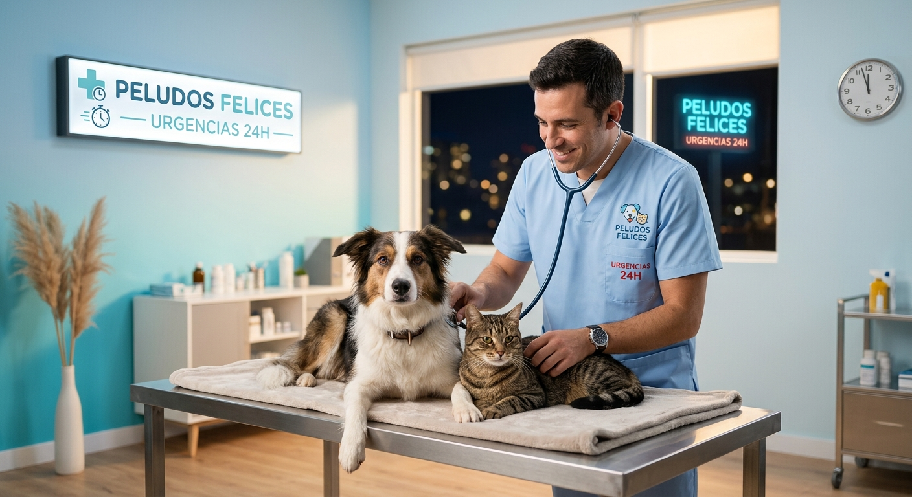
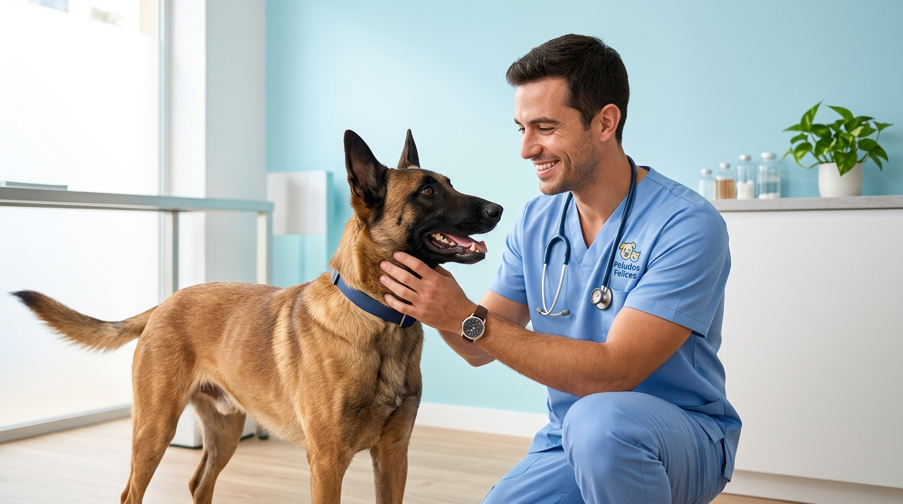
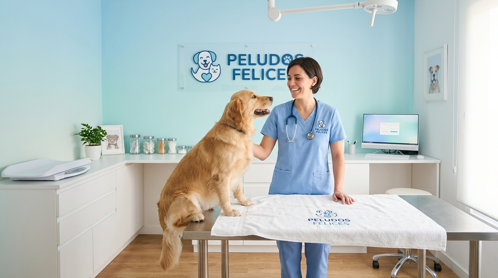
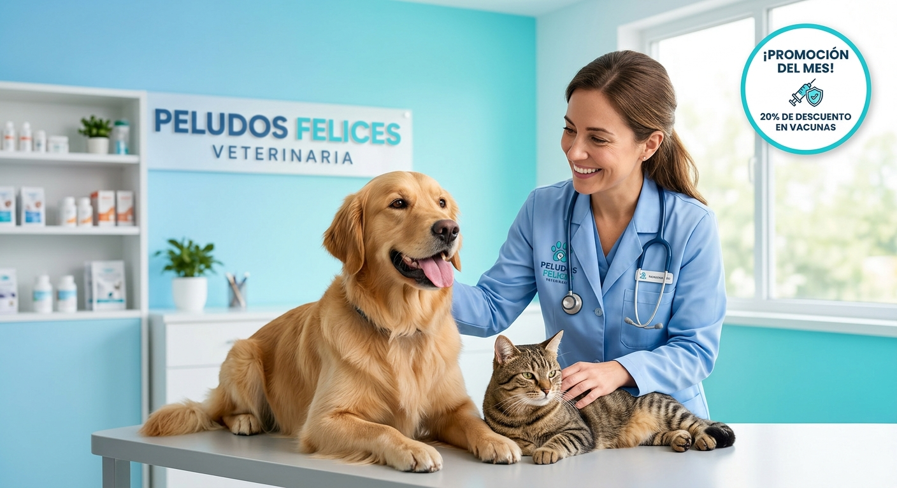
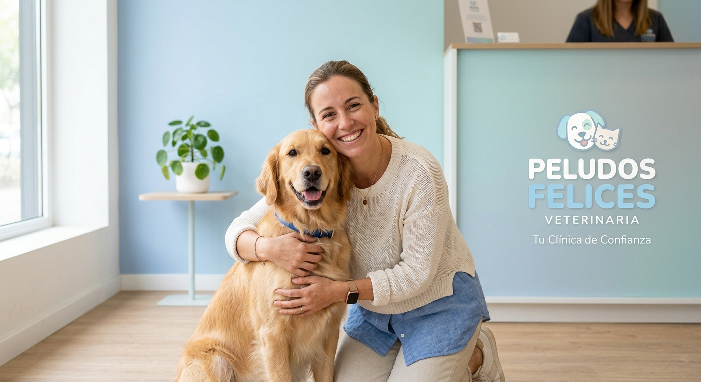

Urgencias 24h
Atención inmediata para emergencias y cuidados rápidos cuando más lo necesitas.
En Peludos Felices entendemos que tu perro es parte de la familia. Por eso ofrecemos atención veterinaria profesional, amable y cercana para cuidar cada etapa de su vida.
Desde la primera consulta hasta el cuidado preventivo, trabajamos para que cada mascota reciba bienestar, prevención y cariño en un ambiente seguro y confiable.


Atención inmediata para emergencias y cuidados rápidos cuando más lo necesitas.

Consultorios y salas de espera diseñados para que tu mascota se sienta segura y cómoda.

Chequeo dental y protección preventiva con descuentos especiales para cuidar su salud.

Familias contentas que confían en nosotros para cuidar a sus peludos con amor y profesionalismo.
“La mejor inversión para tu perro es una atención temprana, constante y con amor.”